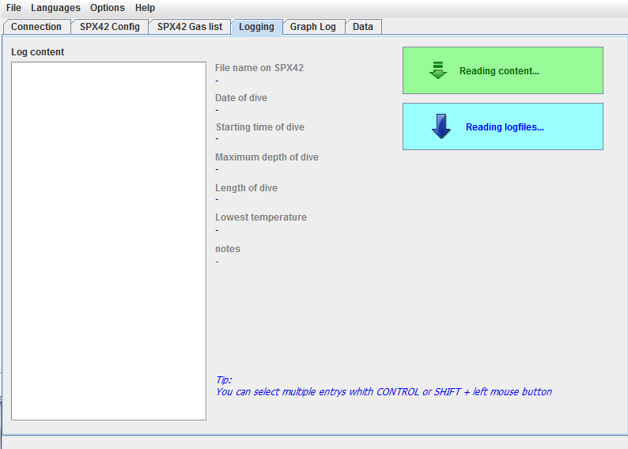
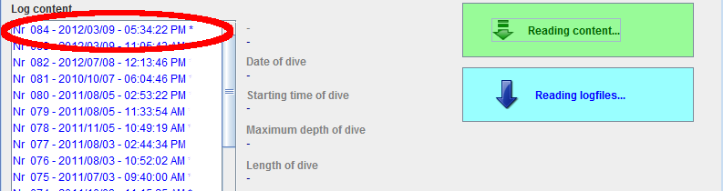
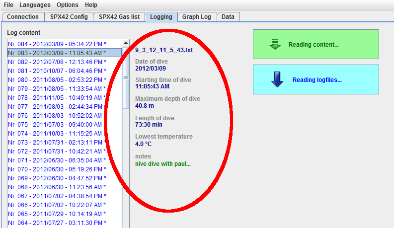
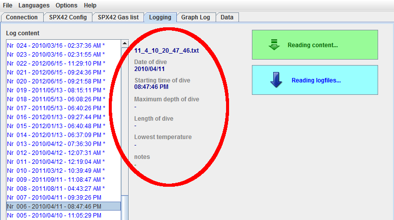

Overview
The tab 'Logging' is only available in online mode. It serves to give an
overview over the log files on the SPX42 and transfer of log files onto the PC.

Logging-overview
Contents
SPX42's List of Contents
To get an overview over the log files available on the SPX42 the button
'Read contents' must be clicked.
An animated 'Please wait' window will pop up while the list of contents is
loaded from the SPX42.
Log files that are already in the internal database will be displayed with an
asterisk '*' behind the entry.

Selected entry (already listed in the database)
On the right hand side next to the list will be an area for details. Details
for the respectively selected entry will be displayed here. Log files already
listed in the database will have more available details.

Selected entry (already listed in the database)

Selected entry (NOT yet listed in database)
If more than one entry is selected details for the topmost will be displayed.
Multiple entries can be selected using CTRL + left mouse button, arrays can
be selected by using left mouse button + SHIFT.
Contents
Transferring log files to database
To save log files to the database the desired entries have to be selected in
the list of contents. Entries will be transferred to the database by clicking
the 'Read log files' button.
During transfer an animated 'Please wait' window will pop up again.
After the process has terminated succesfully the display will be refreshed and
the transferred entries will be selected accordingly.
Contents